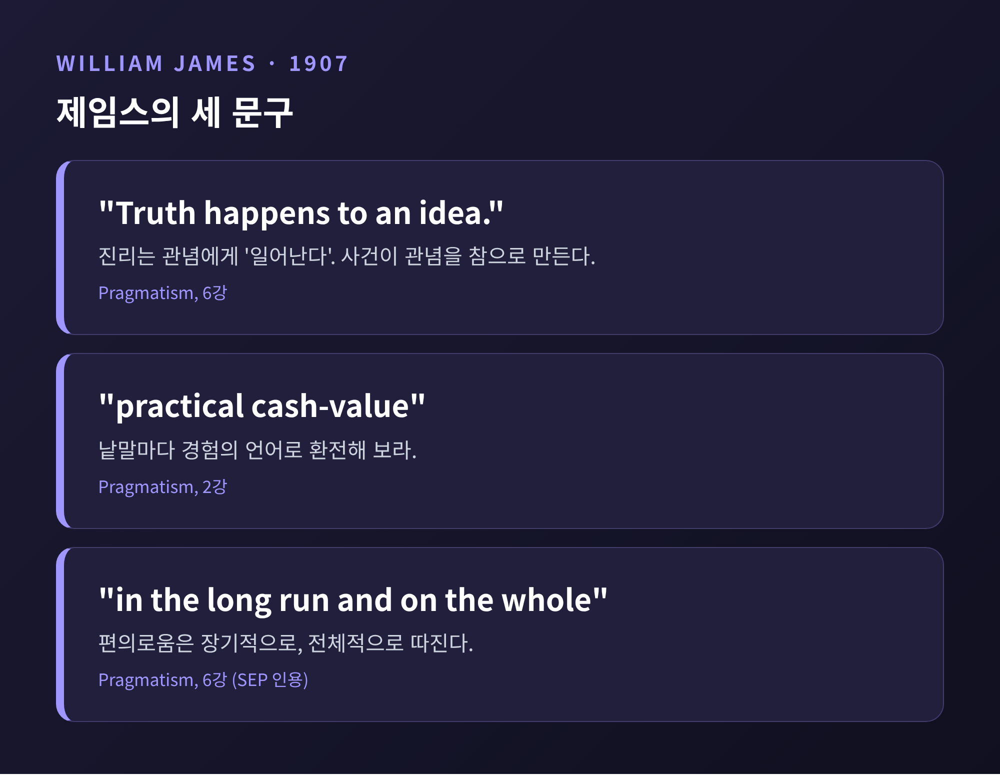

3줄 요약
오늘은 실용주의 진리론에 대해 이야기해 보려 합니다.
"실용주의자들에게 진리란 쓸모 있는 것이다." 흔히 듣는 요약입니다.
이 요약이 어디까지 맞고 어디서부터 틀린지, 세 철학자의 문장으로 따라가 보겠습니다.
실용주의의 출발점은 진리가 아니라 의미였습니다.
찰스 샌더스 퍼스는 1877~78년 《Popular Science Monthly》에 "과학 논리의 해명" 연작을 실었습니다. 첫 편이 「믿음의 고착」, 둘째 편이 「우리의 관념을 명료하게 하는 법」입니다.
둘째 편의 핵심 문장은 이렇습니다. 어떤 대상에 대해 우리가 생각하는, 실천적 영향을 미칠 수 있는 효과가 무엇인지 따져 보라. 그 효과에 대한 우리의 생각이 곧 그 대상에 대한 생각의 전부다. (SEP 인용문을 풀어 옮겼습니다.)
퍼스는 명료함에도 단계가 있다고 보았습니다. 1단계는 낯익음입니다. 2단계는 정의할 수 있는 판명함입니다. 3단계가 바로 이 격률로 얻는 명료함입니다.
예를 들어 보겠습니다. 한 번도 긁힌 적 없는 다이아몬드를 두고도 "단단하다"고 말할 수 있습니다. 퍼스에게 이 말의 뜻은 긁어 보면 긁히지 않으리라는 조건적 효과입니다. 눈에 보이지 않는 속성이 따로 있어서가 아닙니다.
성찬 논쟁에 대한 지적도 같은 맥락입니다. 가톨릭은 빵과 포도주가 문자 그대로 몸과 피라 하고, 개신교는 빵과 포도주의 성질을 가진다고 합니다. 감각으로 확인되는 효과에 차이가 없다면, 퍼스에게 이 차이는 말로만 존재합니다. "어떤 것에 대한 우리의 생각은 그것의 감각적 효과에 대한 생각"이라는 것입니다.
퍼스는 진리도 같은 방식으로 풀었습니다. "탐구하는 모든 사람이 끝내 합의하게 될 운명인 의견, 그것이 우리가 진리라고 부르는 것"이라는 문장입니다.
여기서 눈여겨볼 점이 있습니다. SEP는 이때의 '끝'을 종점이 아니라 목표로 읽습니다. 퍼스는 1901년에는 진리를 무한한 탐구가 다가가는 이상적 한계에 견주었습니다. 1908년 편지에서는 수렴이 보장된 일이 아니라 일종의 규제적 희망이라는 취지로 말했습니다.
이 정의에는 곧바로 반문이 따라옵니다. 아무도 조사하지 않을 일은 어떻게 되는가. 러셀(1939)은 이 수렴이 경험적 일반화인지 낙관적 믿음인지를 물었습니다. 퍼스는 "몇백 년 뒤 우리가 무엇을 모르게 될지 누가 장담하겠는가"라고 맞받았다고 SEP는 소개합니다.
한 가지만 기억해 두시면 좋겠습니다. 퍼스에게 진리는 지금 이 순간의 유용함과 거리가 멉니다. 오히려 어떤 의심에도 끝내 무너지지 않을 의견에 가깝습니다.
윌리엄 제임스는 1906년 말부터 1907년 초 보스턴 로웰 연구소와 컬럼비아대에서 강연하고, 이를 『실용주의』(1907)로 묶었습니다. 그는 낱말마다 "실제 현금 가치(cash-value)"를 끌어내라고 했습니다. 개념을 경험의 언어로 환전해 보라는 요구입니다. 퍼스의 격률을 이어받은 셈입니다.
제임스의 진리 문장은 유명합니다.
6강의 설명은 의외로 평범합니다. 벽시계를 떠올려 보십시오. 속을 열어 보지 않아도 우리는 그것을 시계로 쓰고, 아무 모순도 생기지 않는 한 그 믿음은 통합니다. 가 보지 않은 일본이 있다고 믿는 것도 같습니다. 숲에서 길을 잃었을 때 소가 다닌 길을 따라가면 집이 나오리라 기대하고, 실제로 집이 나오면 그 기대는 참이 됩니다.
제임스는 이런 믿음 대부분이 "신용 체계"로 굴러간다고 했습니다. 누군가 어딘가에서 검증했다는 전제 위에서 서로 어음처럼 주고받는다는 뜻입니다. 그가 말한 일치란 거울처럼 베끼는 관계가 아닙니다. 본질적으로 "이끎의 문제"입니다.

존 듀이는 질문 자체를 바꿨습니다. 진리가 무엇인가보다, 우리는 어떻게 의심에서 안정된 믿음으로 옮겨 가는가를 물었습니다.
그의 『논리학: 탐구의 이론』(1938)은 논리학을 "탐구에 대한 탐구"로 봅니다. 탐구는 "불확정적 상황을 통제되고 지향된 방식으로 변형하는 일"입니다. 바뀌는 것은 믿는 사람의 마음만이 아닙니다. 상황 자체가 달라집니다. SEP가 정리한 탐구의 국면은 다섯 가지입니다.
SEP도 이 순서가 도식일 뿐, 실제 추론은 이보다 덜 선형적이라고 덧붙입니다.
듀이는 '진리'나 '지식' 같은 말에 얹힌 전통적 함의를 부담스러워했습니다. 그래서 탐구가 낳는 성질에 "보증된 언명 가능성"이라는 이름을 붙였습니다. 진리와 거짓은 탐구가 끝나 얻은 판단에 붙는 속성이라는 것입니다. 또 지식은 충분히 안정되어 다음 탐구의 자원으로 쓸 수 있는 것이지만, "더 이상의 탐구에 노출되지 않을 만큼 확고한 믿음은 없다"고도 했습니다.
SEP는 제임스와 듀이가 "진리는 통하는 것"이라는 견해를 가졌다고들 말하지만, 이는 희화화하기 쉬운 요약이라고 경고합니다. IEP의 설명도 비슷합니다. 실용적 대처는 정서적 위안이나 주관적 편안함과 같지 않습니다. 이론은 장기적으로 값을 치러야 합니다.
제임스도 한 쪽만 말하지는 않았습니다. 그는 "유용하기 때문에 참"이라는 말과 "참이기 때문에 유용"이라는 말이 같은 뜻이라고 했습니다. 구체와 구체를 견주면 참인 것과 만족스러운 것이 일치한다는 것입니다. 하지만 일시적 만족은 거짓일 수 있다고 인정했고, 자신의 진리론이 인식에서 독립된 경험적 실재를 인정하는 실재론이라고도 말했습니다.
그러니 정리는 이렇게 됩니다.
SEP는 한편으로 이 단순화가 퍼스의 '물 탄' 판본처럼 보이게 한다고 평합니다. 불가침성이 있던 자리에 현금 가치와 만족이 들어섰기 때문입니다. 퍼스 자신도 제임스의 입장과 거리를 두려고 1905년 이후 자기 입장을 "pragmaticism"이라 불렀습니다. 또 진리가 시간에 따라 변한다는 생각을 실용주의에 퍼진 '죽음의 씨앗'으로 불렀다는 서술도 있습니다. (후자는 위키백과 단일 서술입니다.)
가장 날카로운 반론은 러셀에게서 나왔습니다. SEP는 러셀(1909, 1910)과 러브조이(1908)의 비판을 이렇게 정리합니다. 진리가 효용과 같다면 유용한 거짓과 쓸모없는 참이 반례가 됩니다. "참이다"와 "우리 목적에 보탬이 된다"는 서로 다른 생각입니다. 효용이 진리의 기준일 수는 있어도, 기준은 진리가 무엇인지에 대한 설명을 이미 전제합니다.
러셀은 이런 말도 했습니다. 믿음이 유용한지 판정하는 일이 참인지 판정하는 일보다 훨씬 어려운 경우가 많다고. 해설 논문은 도서관 카탈로그 비유로 이를 풀어 줍니다. 카탈로그 기재는 책이 서가에 있다는 유용한 단서이지만 보증은 아닙니다. 또 다른 2차 해설에 따르면 러셀은 "신이 존재한다"는 결론을 실용주의가 종교에 선사하지 못한다고 보았고, "만족스럽게 작동한다"는 정의는 뜻이 사실상 흐려지는 말놀이가 된다고 보았습니다. 1946년의 러셀이 제임스의 견해에서 "산타클로스가 존재한다"가 참이 되는 결과를 끌어냈다는 소개도 SEP에 있습니다.
G. E. 무어는 1907~08년 아리스토텔레스학회 발표 「제임스 교수의 『실용주의』」(Proceedings 8권)에서 제임스를 따졌습니다. 저는 무어 원문을 직접 읽지 못했고, 하크(1976)를 인용한 해설을 통해 아는 수준입니다. 그 요약에 따르면 무어의 요지는 이렇습니다. 어떤 참인 믿음은 유용하기는커녕 오히려 방해가 될 수 있다는 것입니다.
응답은 크게 세 갈래입니다.
다만 이 응답들이 문제를 깨끗이 닫지는 못합니다. 같은 해설 논문(Özden, 2021)은 각 응답이 반론 하나를 막으면서 다른 반론을 낳는다고 평가합니다. 검증할 수 없는 참, 예컨대 외계 생명이 없다는 명제가 참이라면 어떻게 되는가 하는 문제가 남습니다. 반실재론이라는 혐의도 마찬가지입니다. 진리를 검증 가능성에 묶으면 실재를 놓친다는 비판에, 어떤 이들은 반실재론을 받아들이고 어떤 이들은 실재론을 옹호하며 어떤 이들은 구분 자체를 허뭅니다.
끝으로 한 마디만 더 드리겠습니다.
실용주의 진리론의 힘은 진리를 쓸모로 바꿔치기한 데 있지 않았습니다. 진리라는 말을 추상에서 꺼내어 의심, 검증, 탐구라는 구체적 과정에 묶어 둔 데 있었습니다. 한계도 분명합니다. 기준과 의미를 구분하라는 러셀의 요구, 쓸모와 참이 어긋나는 사례들, 검증할 수 없는 참의 문제는 지금도 논쟁의 한가운데 있습니다. 퍼스·제임스·듀이를 한 묶음으로 읽는 것도 조심해야 합니다. 세 사람은 서로 다른 질문에 답하고 있었기 때문입니다.
결국 남는 것은 하나입니다. "진리는 유용한 것이다"가 아니라, "참이라는 말에는 어떤 경험적 결과가 따르는가"라는 물음입니다.
이 물음을 오늘 자신의 믿음 하나에 던져 보시길 권합니다. 그 믿음이 틀렸다면 무엇이 달라질까요. 답이 떠오르지 않는다면, 퍼스는 그 믿음이 아직 명료하지 않다고 말할 것입니다.
참고: 영어 인용구는 필자가 한국어로 옮겼습니다. 퍼스·제임스 원문은 공개본의 요약을 통해, 러셀·무어는 2차 자료(SEP, 학술 해설)를 통해 확인했습니다.